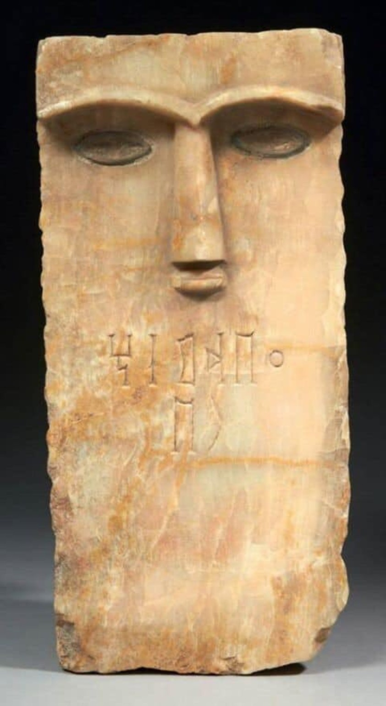

A home for documentary videos, TikTok explainers, supplied archaeological photography, inscription references, and future audio or interactive material.
These examples use supplied source images directly. The site does not substitute generated pseudo-inscriptions for documented material.


